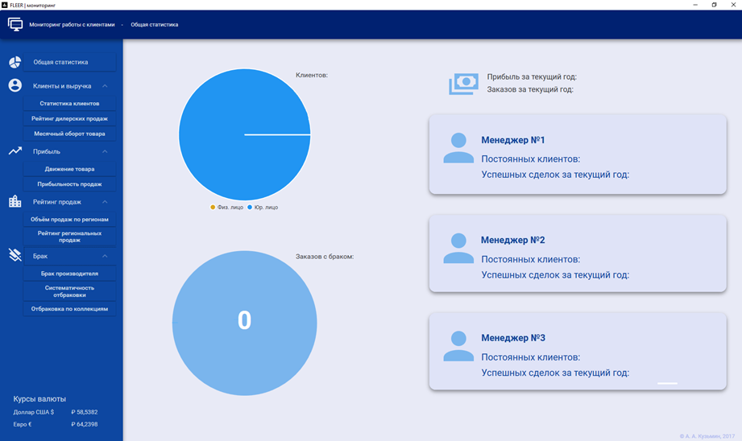
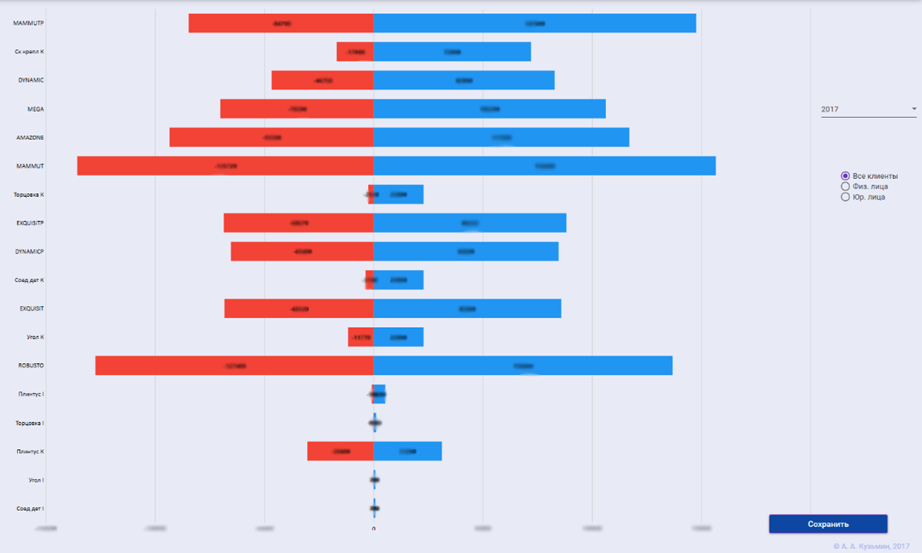
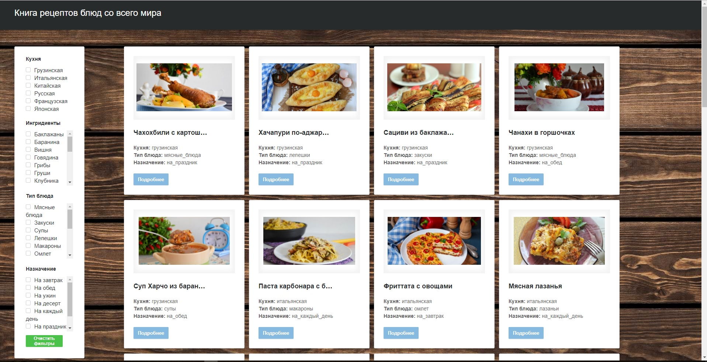
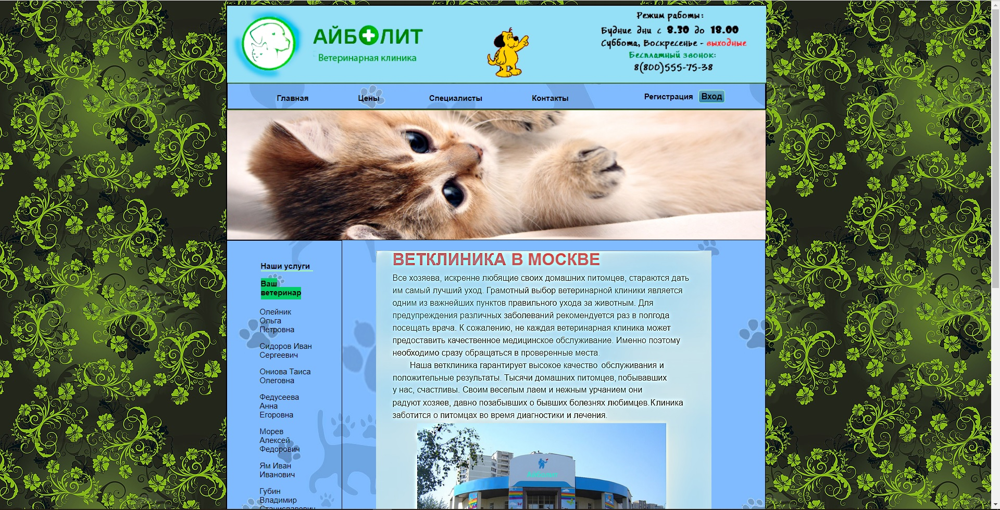
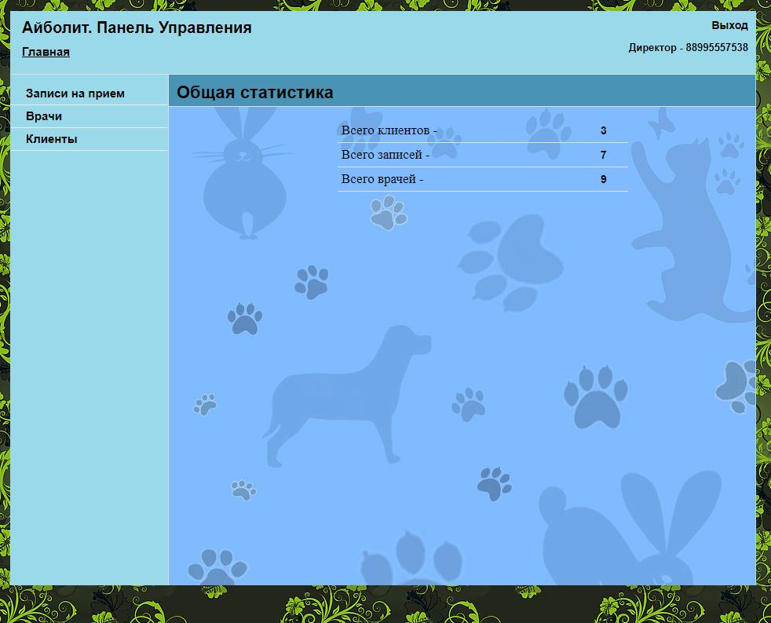

Резюме
Свернуть резюме
Желаемая должность и зарплата |
||
|
Программист-разработчик |
||
Занятость: |
стажировка, частичная занятость, полная занятость |
|
График работы: |
гибкий график, полный день |
|
Заработная плата: |
по договоренности |
|
Опыт работы |
||
|
Апрель 2017 |
ФЛИР, ООО Москва Практикант-системный администратор Тестирование разработанной автоматизированной системы мониторинга работы с клиентами |
|
|
Июнь 2016 |
МегаФон, ПАО Москва Практикант-инженер по поддержке Федеральной системы Service Manager Поддержка федеральной системы Service Manager. |
|
Образование |
||
|
Магистр 2019 |
Московский государственный технологический университет "Станкин", Москва Факультет: Институт информационных систем и технологий Направление: Информатика и вычислительная техника |
|
|
Бакалавр 2017 |
Московский государственный технологический университет "Станкин", Москва Факультет: Институт информационных систем и технологий Направление: Информатика и вычислительная техника |
|
Ключевые навыки |
||
|
Знание языков |
Русский — родной Английский — Upper-Intermediate |
|
|
Навыки |
C#
C/C++
Java
JavaScript
HTML
CSS
SQL
UML
IDEF
Git |
|
|
Опыт вождения |
Права категории В, стаж 4 года |
|
Дополнительная информация |
||
|
Обо мне |
Развиваюсь в направлении программирования и проектирования ПО. Программирую на С#, Java, начал изучать JavaScript. В качестве курсовых работ проектировал концептуальную модель производственного процесса, создавал анимированную модель на С++ с использованием OpenGL и Blender3D. По дипломному проекту была разработана система мониторинга работы с клиентами на C#. |
|
Свернуть резюме
Портфолио
Автоматизированная система мониторинга работы с клиентами компании
Свернуть проект
Описание
Разработанная автоматизированная система мониторинга предназначена для директора по продажам. Она представлена в виде программного продукта с пользовательским интерфейсом. Процедура производит мониторинг данных компании и представляет результат в виде диаграмм:
1) Статистика клиентов.
2) Рейтинг дилерских продаж.
3) Месячный оборот товара.
4) Движение товара.
5) Прибыльность продаж.
6) Объём продаж по регионам.
7) Рейтинг региональных продаж.
8) Брак производителя.
9) Систематичность отбраковки.
10) Отбраковка по коллекциям.
Для работы в данной системе пользователю необходимо пройти авторизацию в окне входа. Главное окно системы мониторинга отображает статистику клиентов компании на круговой диаграмме, показывающей соотношение физических и юридических лиц, и отображает на второй диаграмме процент отбракованных заказов в текущем году. Также на главном экране выводится информация о прибыли за текущий год и статистика менеджеров по постоянным клиентам и успешным сделкам за текущий год. Директор по продажам имеет возможность сформировать отчеты всех проведенных процедур, нажав на кнопку «сохранить». Отчет представляет собой файл формата xls. В данном файле составлена таблица проанализированной выборки и её графическое представление в виде диаграммы.
Проект является конфиденциальным, разработанным для существующей организации. В данном репозитории представлено описание и небольшая часть кода.
 Инструменты разработки
1) Унифицированный языка моделирования UML и веб-сервис Creately для моделирования.
2) База данных: среда управления SQL Server Manager Studio 2016, СУБД MS SQL Server 2012, язык запросов Transact-SQL.
3) Платформа .NET Framework.
4) Интегрированная среда разработки Microsoft Visual Studio 2015 Enterprise.
5) Объектно-ориентированный язык программирования Visual C#.
6) Платформа пользовательского интерфейса Windows Presentation Foundation (WPF).
7) Графическая библиотека стилей Material Design In XAML Toolkit.
8) Библиотека для работы с отчетами Microsoft.Office.Interop.Excel.
9) Библиотека интерактивных диаграмм LiveChats.
10) Технология работы с базами данных Entity Framework.
11) Компонента развертывания проекта Visual Studio Installer.
Пример исходного кода
Часть кода представленной диаграммы
Свернуть проект
Telegram Bot Ассистент
Свернуть проект
Описание
Проект находится в разработке. На данный момент разработан основной каркас бота, т.е. подключение к серверу, обработка сообщений, ответ на сообщения. По итогам разработки бот будет иметь следующий минимальный функционал:
1) Решение различного рода уравнений.
2) Прогноз погоды.
3) Курс валюты.
4) Перевод слов.
Данный проект разрабатывается на языке программирования C# с использованием Telegram API.
Исходный код
Свернуть проект
Многопользовательский чат (клиент-сервер)
Свернуть проект
Описание
Чат состоит из серверной части и клиентской. После запуска сервера можно включать клиентские приложения. Сервер отслеживает все входы, сообщения и выходы. Данный проект разработан на языке программирования Java с применением графической библиотеки swing в интегрированной среде разработки IntelliJ IDEA.


Исходный код
Свернуть проект
Книга рецептов блюд со всего мира
Свернуть проект
Описание
Требования к SinglePageApplication:
1) Приложение должно представлять из себя хорошо оформленную базу данных с различными блюдами, их описанием, ингредиентами и пошаговым рецептом приготовления.
2) В приложении должен осуществляться фильтр по национальным блюдам, ингредиентам и типам блюда.
3) При нажатии на блок с блюдом должно открываться описание блюда, его изображение, ингредиенты и пошаговый рецепт с картинками.
4) Вверху окна приложения должен быть закреплённый банер, при нажатии на который происходит переход на начало страницы.
5) Слева окна приложения должен быть закреплённый банер с параметрами выбора фильтров по кухне, ингредиентам и типу блюда.
Данный проект разработан с использованием html, css, javascript, json.
Исходный код
Свернуть проект
Веб-сайт ветклиники (клиентская сторона + режим администратора)
Свернуть проект
Описание
Данный веб-сайт разработан на языке программирования php с использованием html, css, javascript и базы данных mysql. Сайт состоит из двух частей:
1) клиентская - пользователь имеет следующие возможности:
- почитать про клинику
- посмотреть цены
- почитать о процедурах
- почитать о специалистах в данной клинике
- зарегистрироваться на сайте
- зарегистрироваться на прием к специалисту после входа на сайт
2) администраторская - администратор сайта имеет следующие возможности:
- редактировать список врачей (добавлять, удалять)
- редактировать описание врача
- отслеживать заявки на прием к врачам
- отслеживать список клиентов клиники
 Исходный код
Исходники режима администратора